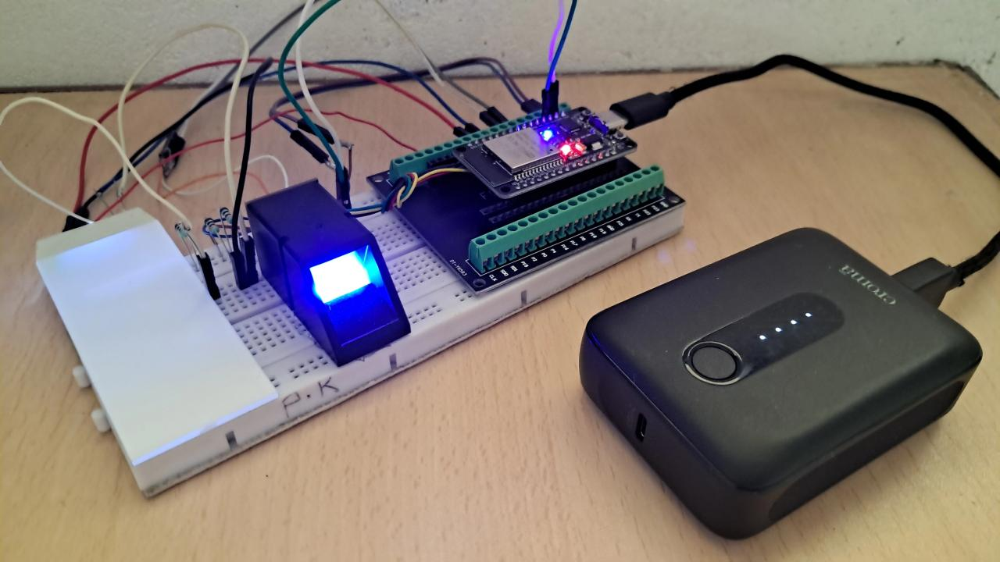
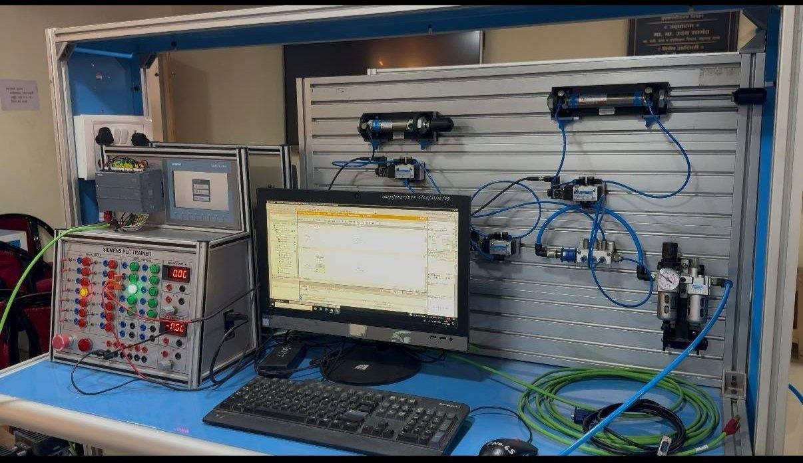
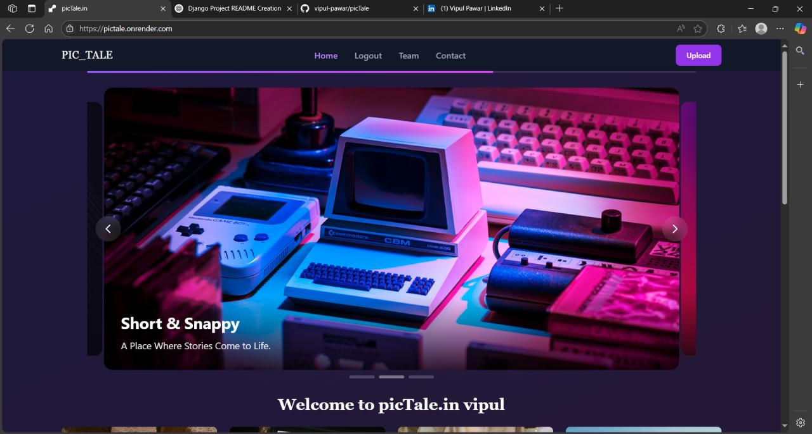
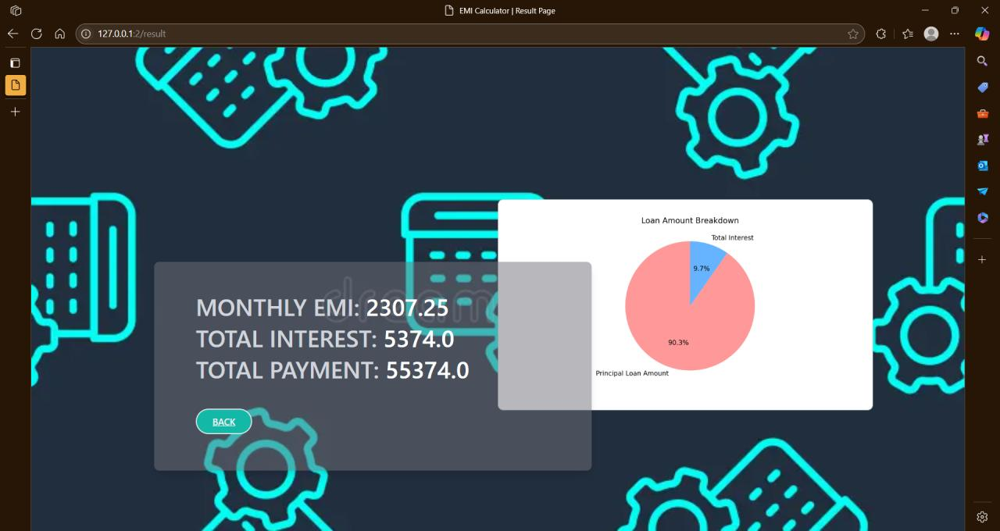

PRJ-000 // PROJECT INDEX
Projects
Five builds from GCOEA coursework and personal work — sequential PLC control, embedded and IoT systems, security-focused authentication and Django web apps. Filter by the tag that interests you.
5 of 5 projects shown

VOT-101 Embedded / IoT Security Voter Authentication System Feb–May 2026 · GCOEA Multi-factor verification that pairs a QR code from the voter list with fingerprint matching on an ESP32, with a cloud audit log of every attempt. View details
PNE-102 PLC PLC-Based Control of Single & Double-Acting Pneumatic Cylinders Apr 2026 · GCOEA Sequential control where the second piston only starts after the first finishes its cycle, using a 5 s off-delay timer and negative edge detection. View details SNR-103
Embedded / IoT
sonicRadar
Apr 2025 · GCOEA
A submarine-sonar-style radar: an HC-SR04 on a servo sweeps 180°, a buzzer warns about nearby objects
and the sweep is drawn live in Processing IDE.
View details
SNR-103
Embedded / IoT
sonicRadar
Apr 2025 · GCOEA
A submarine-sonar-style radar: an HC-SR04 on a servo sweeps 180°, a buzzer warns about nearby objects
and the sweep is drawn live in Processing IDE.
View details

WEB-104 Web PicTale Jun 2025 Django gallery with full CRUD for photos and videos, user authentication, an admin dashboard and a responsive dark-mode interface. View details
FIN-105 Web EMI Calculator Jan 2025 Django app that computes loan EMI from principal, interest rate and tenure with a clean Tailwind and Bootstrap interface. View details